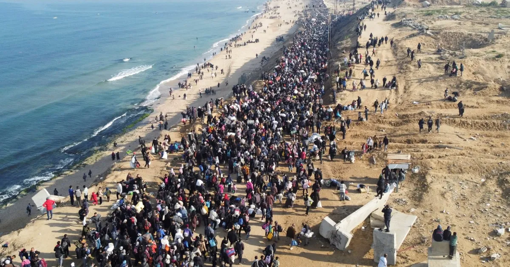

في غزة، لم يعد النزوح مجرد انتقال من مكان إلى آخر، بل أصبح رحلة قاسية مليئة بالخوف والفقد. العائلات تضطر لمغادرة منازلها تحت القصف، حاملة ما تستطيع من ذكريات واحتياجات أساسية، في طريق مجهول لا يعرفون نهايته. في كل خيمة قصة، وفي كل زاوية حكاية عن فقدان بيت أو قريب أو أمان. الأطفال الذين كانوا يعيشون حياة طبيعية، وجدوا أنفسهم فجأة في بيئة مليئة بالخوف، حيث أصبحت أصوات الانفجارات جزءًا من يومهم. النساء تحاول الحفاظ على تماسك العائلة رغم الألم، والرجال يسعون لتأمين أبسط مقومات الحياة، لكن الحقيقة تبقى أن النزوح ليس مجرد فقدان مكان، بل هو فقدان شعور الاستقرار والانتماء. ورغم كل ذلك، يظل الأمل حاضرًا، في عودة قريبة، في بيت يُعاد بناؤه، وفي حياة تعود كما كانت… أو أفضل.
In Gaza, displacement is no longer just moving from one place to another, but a painful journey filled with fear and loss. Families are forced to leave their homes under bombing, carrying only what they can. Every tent holds a story, every corner tells of loss — of homes, loved ones, and safety. Children who once lived normal lives now grow up surrounded by fear, where explosions are part of daily life. Women try to hold families together, while men struggle to provide the basics, but displacement is more than losing a place — it is losing a sense of belonging. Yet, hope remains… for return, for rebuilding, and for life to rise again.
⬅ العودة إلى القصص